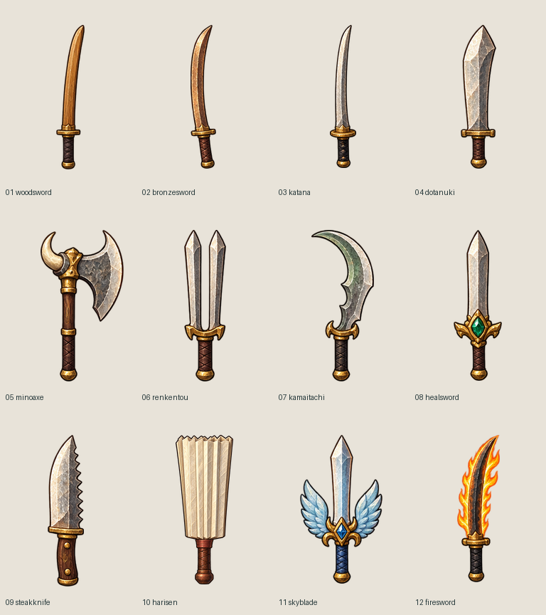

FUSHIGI / WEAPONS 01
武器を切り替え、待機・攻撃・振り抜き・戻りを確認できます。盾と主人公は承認済みv3を使用しています。
確認待ちの初版です。剣の描画倍率0.66、盾0.59。NWは盾が腕全体の後ろ、SEは手より前。武器は正面原画1視点を使用しており、方向別の原画追加は今後の範囲です。
武器12種類の一覧画像 · NW 全武器・全コマ · SE 全武器・全コマ · 全武器・8方向の実表示サイズ · 承認済みv3
